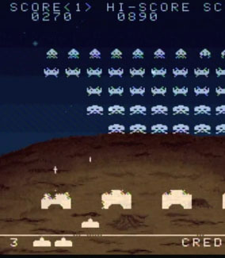

This section demonstrates ways that mobile developers write code and structure their games so that they run fast. The core idea here is that game design and optimization aren’t really separate processes; decisions you make when you are designing your game can make it both fun and fast.
A historical example

You may remember old games where the player was only allowed one shot on the screen at a time, and reload speed was controlled by whether the bullet missed or not, instead of a timer. This technique is called object pooling, and it simplifies memory management, making programs run smoother.
The creators of space invaders only had a small amount of RAM, and they had to ensure that their program would never need to allocate more than was available. If they let the player fire once every second, and they offered a powerup that decreased the reload time to a half a second, they would have to ensure that there was enough memory space to allocate a lot of projectiles in the case where the player fires as fast as possible and all of the shots live for the longest possible time. That would probably pose a problem for them, so instead, they just allocated one projectile and left it at that. As soon as the projectile dies, it is simply deactivated, and repositioned and activated when it is fired again. But it always lives in the same space in memory and doesn’t have to move around or be constantly deleted and recreated.
An optimization, or a gameplay gem?
This is hardly realistic, but it happens to be fun. Tension is released in a climactic moment when the alien invaders approach the ground, similar to a climax in film or literature. The invaders’ close proximity gives the adept player near-instantaneous reload time, allowing them to miraculously defend earth by mashing the fire key in perfect time. Good game designs live in a bizarre space between the interactive narrative and the background technology that powers it all. It’s hard to plan out awesome, fun, efficient stuff like this, because code logistics and user interaction are two wildly different and deeply finicky things, and using them together to synthesize something fresh and fun takes a lot of thought and experimentation.
You probably can’t plan out every aspect of your game in terms of interaction and playing nice with mobile hardware simultaneously. It’s more likely that these “gems” where the two meet in harmony will pop up as accidents while you’re experimenting. But having a solid understanding of the way your code runs on the hardware you intend to deploy on will help. If you want to see the detailed technical explanation of why object pooling is better, and learn about memory allocation, see our Scripting Optimizations page.
Will X run fast on Mobiles?
Say you are beginning to work on a game, and you want to impress your players with lots of action and flashy stuff happening at once. How do you plan those things out? How do you know where the limits are, in game terms like how many coins, how many zombies, how many opponent cars, etc(Ericsson Texture Compression) A block-based texture format that compresses textures to significantly reduce file sizes without causing a noticable reduction in image quality. More info See in Glossary? It all depends on how you code your game.
Generally, if you write your game code the easy way, or the most general and versatile way, you will run into performance issues a lot sooner. The more you rely on specific structures and tricks to run your game, the more horizons will expand, and you will be able to cram more stuff on screen.
Easy and versatile, but slow
RigidbodiesA component that allows a GameObject to be affected by simulated gravity and other forces. More info See in Glossary limited to 2 dimensions in a 2D game.
Rigidbodies on projectiles.
Using Instantiate and Destroy a lot.
Lots of individual 3D objectsA 3D GameObject such as a cube, terrain or ragdoll. More info See in Glossary for collectables or characters.
Performing calculations every frame.
Using OnGUI for your GUI or HUD.
Complicated and limited, but faster
Writing your own physics code for a 2D game.
Handling collision detectionAn automatic process performed by Unity which determines whether a moving GameObject with a rigidbody and collider component has come into contact with any other colliders. More info See in Glossary for projectiles yourself.
Using Object Pooling instead of Instantiate and Destroy.
Using animated spritesA 2D graphic objects. If you are used to working in 3D, Sprites are essentially just standard textures but there are special techniques for combining and managing sprite textures for efficiency and convenience during development. More info See in Glossary on particles to represent simple objects.
Performing expensive calculations every few frames and caching the results.
A custom GUI solution.
Examples
Hundreds of rotating, dynamically lit, collectable coins onscreen at once
NO: Each coin is a separate object with a rigidbody and a script that rotates it and allows it to be picked up.
YES: The coins are a particle systemA component that simulates fluid entities such as liquids, clouds and flames by generating and animating large numbers of small 2D images in the scene. More info See in Glossary with an animated texture, one script does the collisionA collision occurs when the physics engine detects that the colliders of two GameObjects make contact or overlap, when at least one has a rigidbody component and is in motion. More info See in Glossary testing for all the coins and sets their color according to distance from a light.
This example is implemented in the Scripting Optimization page.
Your custom-built soft-body simulation
NO: The world has pillows lying around everywhere, which you can throw around and make piles of.
YES: Your character is a pillow, there is only one of them, and the situations it will be in are somewhat predictable (It only collides with spheres and axis-aligned cubes). You can probably code something which isn’t a full-featured softbody simulation, but looks really impressive and runs fast.
30 enemy characters shooting at the player at once
NO: Each enemy has its own skinned meshThe main graphics primitive of Unity. Meshes make up a large part of your 3D worlds. Unity supports triangulated or Quadrangulated polygon meshes. Nurbs, Nurms, Subdiv surfaces must be converted to polygons. More info See in Glossary, a separate object for their weapon, and instantiates a rigidbody-based projectile every time they fire. Each enemy takes the state of all of its compatriots into account in a complicated AI script that runs every frame.
YES: Most of the enemies are far away, and are represented by single sprites, or, the enemies are 2D and are just a couple sprites anyway. Every enemy bullet is drawn by the same particle system and simulated by a script which does only rudimentary physics. Each enemy updates its AI state twice per second according to the state of the other enemies in its sector.
Is something described here not working as you expect it to? It might be a Known Issue. Please check with the Issue Tracker at issuetracker.unity3d.com.
Thanks for letting us know! This page has been marked for review based on your feedback.
If you have time, you can provide more information to help us fix the problem faster.
You've told us this page needs code samples. If you'd like to help us further, you could provide a code sample, or tell us about what kind of code sample you'd like to see:
You've told us there are code samples on this page which don't work. If you know how to fix it, or have something better we could use instead, please let us know:
You've told us there is information missing from this page. Please tell us more about what's missing:
You've told us there is incorrect information on this page. If you know what we should change to make it correct, please tell us:
You've told us this page has unclear or confusing information. Please tell us more about what you found unclear or confusing, or let us know how we could make it clearer:
You've told us there is a spelling or grammar error on this page. Please tell us what's wrong:
You've told us this page has a problem. Please tell us more about what's wrong:
Thanks for helping to make the Unity documentation better!